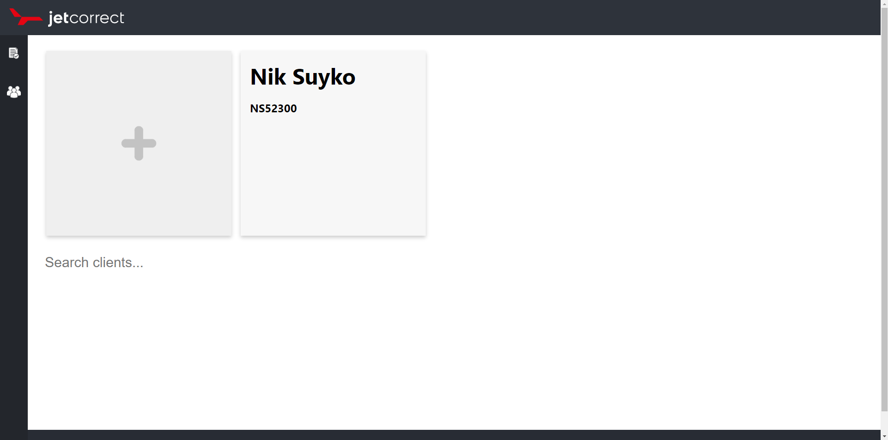

JetCorrect Bookkeeping Site
I created a simple book-keeping site for a local detailing business. Utilizes React with HTML and CSS for the frontend, along with Node.js for the backend. Inventory and client data is handled by a PostgreSQL database.
Solidity Finance Project
Binance Smart Chain project utilizing Solidity programming language. For the unfamiliar, Solidity shares closest similarities to Javascript in terms of syntax and structure, as well as variable and data types. Each of the coins I created had unique properties to it, as well as their own individual communities for marketing and discussion. I've included a link to the source code of one of the coin projects. This code is partially the work of me and the a developer who collaborated on a security function for transactions, as well as the general code for BSC coin development. Due to privacy reasons, I can't publicly upload all the projects but I would love to discuss them more if you're interested. My favorite part of this project was collaborating on a Ukraine aid token that saw $1000 donated to Ukraine relief efforts.